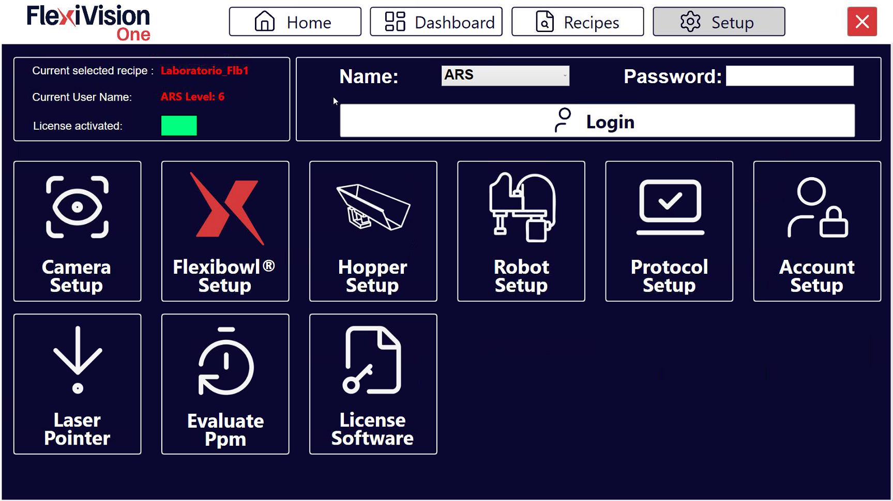
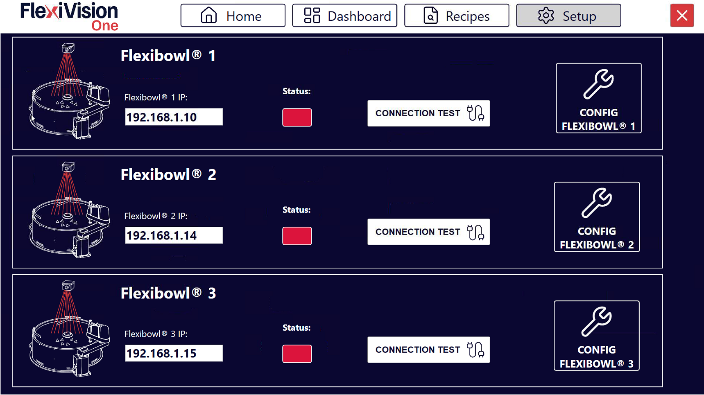
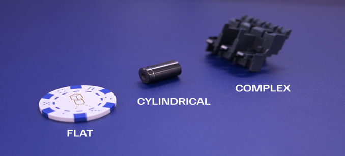
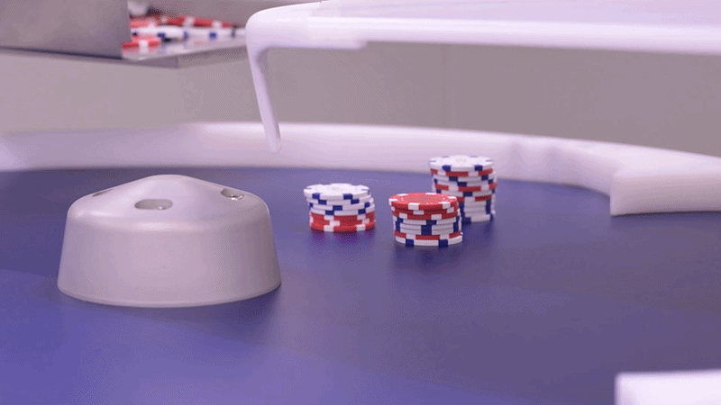
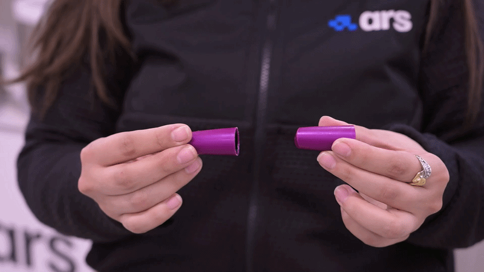
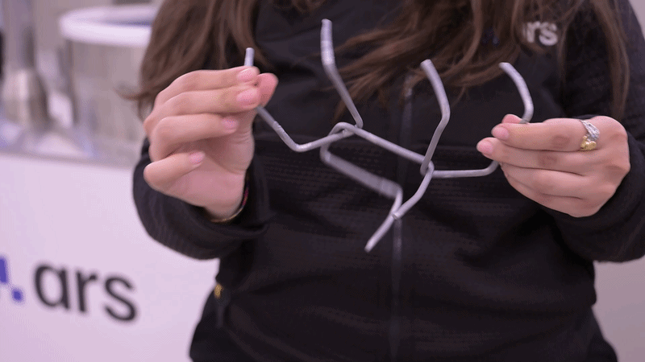

FlexiBowl® Setup#
Esta sección describe el procedimiento para conectar y configurar el FlexiBowl® con el sistema FlexiVision One.
Note
Requisitos previos
Asegúrese de que:
La instalación mecánica de todos los componentes esté completada (Instalación mecánica)
Todos los cables estén correctamente conectados (Cableado y conexiones)
Acceso a la configuración FlexiBowl®#
1 |
Desde la página principal del software, haga clic en |
2 |
En la página SETUP, identifique y haga clic en el icono FlexiBowl® Setup Página de configuración |
3 |
Se abre la pantalla de configuración de los FlexiBowl® |


#Procedimiento de conexión#
Paso 1: Configuración de la dirección de red#
4 |
Verifique que la dirección esté en la misma subred del VisionController |
5 |
En el campo FlexiBowl® IP, introduzca la dirección IP del FlexiBowl®
|
Tip
Por comodidad y coherencia, empiece por el primer FlexiBowl® disponible
Note
El FlexiBowl® se envía con la dirección IP predeterminada 192.168.1.10
Important
Para instrucciones sobre cómo modificar la dirección IP del FlexiBowl®, consulte el manual disponible en la sección Download.
Paso 2: Prueba de conexión#
6 |
Después de introducir la IP, haga clic en el botón Connection Test |
7 |
El sistema realiza una prueba de comunicación (ping) al FlexiBowl® |
8 |
Observe el indicador de Status:
|
Warning
Conexión fallida
Si el indicador permanece rojo o aparece un mensaje de error:
Compruebe que ha encendido el FlexiBowl®
Compruebe que la dirección IP introducida es correcta
Compruebe físicamente el cable Ethernet (debe estar completamente insertado)
Si está presente, compruebe que el Switch de red/enrutador está encendido
Asegúrese de que FlexiBowl® y VisionController están en la misma subred
Pruebe a hacer ping al FlexiBowl® desde un terminal Windows:
Abra el símbolo del sistema
Escriba:
ping 192.168.1.XXX(sustituya por la IP real)Si el ping falla, es un problema de red
Si el problema persiste, consulte Troubleshooting.
Configuración de parámetros FlexiBowl®#
Una vez establecida la conexión, proceda a configurar los parámetros de funcionamiento.
Paso 3: Acceso a la configuración#
9 |
Haga clic en el botón |
10 |
Se abre una ventana con los parámetros configurables del FlexiBowl® |
Paso 4: Sincronización de parámetros#
12 |
Haga clic en Synchronize Parameters |
13 |
Vuelva a la página SETUP principal para continuar con la siguiente configuración |
Warning
No omitir la sincronización
Es imprescindible hacer clic en Synchronize Parameters después de cada modificación. Sin este paso:
Los cambios no se aplican al FlexiBowl®
El sistema puede comportarse de forma incoherente
Los ajustes no se guardan
Configuración guiada: Asistente FlexiBowl#
La interfaz Asistente FlexiBowl es una herramienta interactiva diseñada para guiar al usuario en la configuración de los parámetros de alimentación en función de la familia de productos específica que se vaya a gestionar.
Paso 1: Acceso al Wizard#
Para iniciar el procedimiento:
1 |
Vaya a la sección |
2 |
Haga clic en el botón FlexiBowl® Setup; se abrirá una página con todos los FlexiBowl® que pueden gestionarse con FlexiVision One Página de configuración de FlexiBowl |
3 |
Haga clic en el botón Página de configuración de FlexiBowl® |
4 |
Haga clic en el botón FlexiBowl® X Wizard; se abrirá una página de bienvenida al Wizard |
5 |
Haga clic en Note Haga clic en |
Paso 2: Selección de modelo y rotación#
En esta fase se definen las características hardware del sistema:
6 |
Seleccione el tamaño del dispositivo (por ejemplo, 200, 350, 500, etc.). |
7 |
Defina el sentido de rotación del disco (Clockwise o CounterClockwise). |
Paso 3: Caracterización del componente#
El sistema necesita información sobre la morfología de las piezas para optimizar la separación.
8 |
Seleccione el tamaño del componente:** Para modelos FlexiBowl 200, 350, 500, 650: <= 150mm > 150mm Para modelos FlexiBowl 800 y 1200: <= 250mm > 250mm |
9 |
Seleccione la geometría que mejor describa el componente:
 Ejemplos de geometrías: Flat, Cylindrical y Complex. |
10 |
Defina cómo interactúan los componentes entre sí en la superficie:
 Sin solapamiento: las piezas no se solapan en la superficie.  Apilamiento: las piezas se apilan.  Enredos: las piezas se enganchan entre sí. |
Paso 4: Prueba de accesorios#
11 |
Seleccione en el menú desplegable si el FlexiBowl® está equipado con el módulo Air-blow. |
12 |
Haga clic en TEST Air-blow para comprobar el funcionamiento. |
13 |
Seleccione USE para habilitarlo en la aplicación actual; de lo contrario, haga clic en DON’T USE. |
14 |
Haga clic en TEST FLIP para comprobar la activación real del Flip. El “Flip” es la unidad que genera el impulso mecánico para voltear las piezas; es esencial para separar, desenredar o voltear componentes durante el ciclo de alimentación. Important Si el impulso no es perceptible, verifique que el aire comprimido esté conectado y actúe sobre el regulador de presión mecánico situado en el panel de control. |
15 |
Al finalizar el Wizard, al hacer clic en FINISH, el sistema calculará automáticamente los parámetros:
|
16 |
Será posible afinarlos en el panel resumen. |
Grupo |
Parámetro |
Descripción |
|---|---|---|
Move |
Accel, Decel, Speed, Angle |
Parámetros del movimiento principal del disco. |
Option |
Flip Count, Flip Delay, Blow Time |
Gestión de los tiempos de activación de los accesorios. |
Shake |
Accel, Speed, Angle CW/CCW |
Parámetros de vibración de la agitación (separación). |
Paso 5: Validación de la secuencia#
Utilice la función Test Sequence para comprobar que el ciclo cumple los siguientes criterios de eficiencia:
Sincronización |
El impulso de Flip debe terminar exactamente al mismo tiempo que termina el movimiento (Move). Ajuste los valores de Flip Count y Delay para alinearlos. |
Estabilidad de la imagen |
Los componentes deben estar quietos cuando se dispara la cámara.
|
Posicionamiento de las piezas durante la secuencia |
Durante el movimiento, las piezas deben transportarse hacia el centro del radio del FlexiBowl® para maximizar la eficacia del Flip. Al final de la secuencia, las piezas deben colocarse aproximadamente en el centro del área de visión. |
Warning
Haga clic siempre en Synchronize Parameters después de cada modificación manual para activar los cambios en el controlador.
Descripción Parámetros FlexiBowl#
ID |
Elemento |
Descripción |
|---|---|---|
1 |
MOVE – Aceleración |
Valor de aceleración utilizado en cada comando MOVE |
2 |
MOVE – Desaceleración |
Valor de desaceleración utilizado en cada comando MOVE |
3 |
MOVE – Velocidad |
Valor de velocidad (rpm) utilizado en cada comando MOVE |
4 |
MOVE – Ángulo |
Ángulo al que se mueve el FlexiBowl® con cada comando MOVE |
5 |
SHAKE – Aceleración |
Valor de aceleración utilizado en cada comando SHAKE |
6 |
SHAKE – Desaceleración |
Valor de desaceleración utilizado en cada comando SHAKE |
7 |
MOVE – Velocidad |
Valor de velocidad (rpm) utilizado en cada comando SHAKE |
8 |
MOVE – Ángulo CW |
Ángulo en el sentido horario con el que se mueve FlexiBowl® en cada comando SHAKE |
9 |
MOVE – Ángulo CCW |
Ángulo en el sentido antihorario con el que se mueve FlexiBowl® en cada comando SHAKE |
10 |
OPTION – Flip Count |
Número de activaciones del Flip que se realizarán |
11 |
OPTION – Flip Delay |
Tiempo (en milisegundos) entre una activación y una desactivación del Flip |
12 |
OPTION – Blow Time |
Tiempo (en milisegundos) de activación del blow |
13 |
OPTION – Luz encendida |
Pulse para activar/desactivar la retroiluminación |
Tip
Prueba de producción
Antes de utilizarlo en producción:
Ejecute 50-100 ciclos de prueba para comprobar la consistencia
Supervise la tasa de llenado del disco (debe ser constante)
Compruebe que no haya acumulaciones anormales ni zonas vacías persistentes
Incremente gradualmente hacia la velocidad de producción
La configuración óptima puede requerir 2-3 sesiones de puesta a punto con la pieza real en cantidades significativas.
Próximos pasos#
Una vez finalizada la configuración del FlexiBowl®, continúe con: